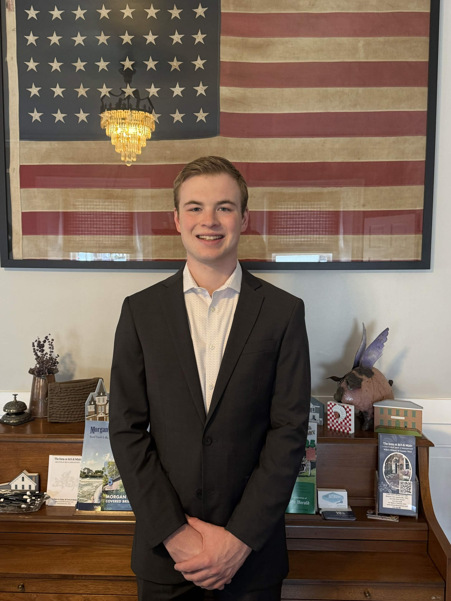
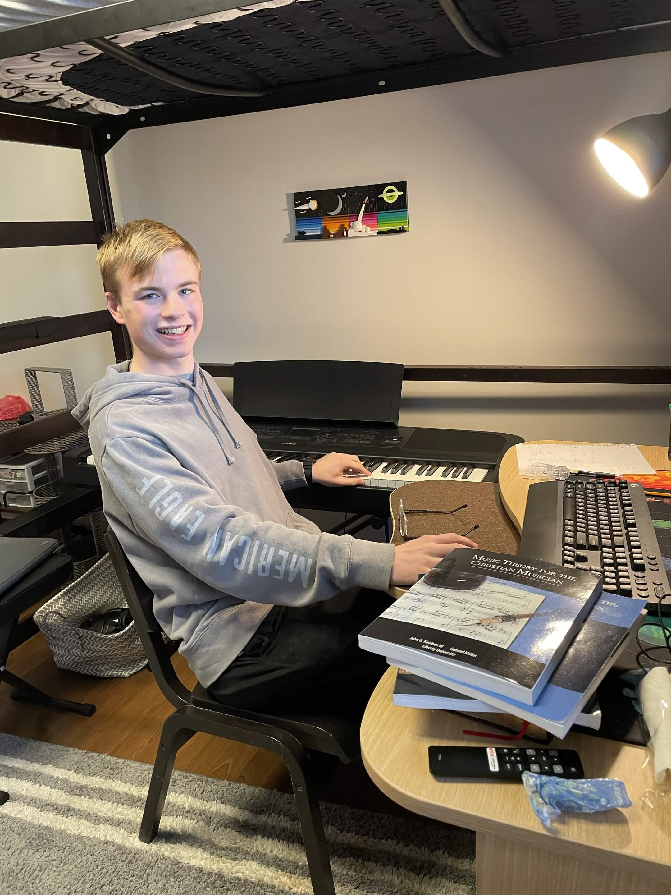
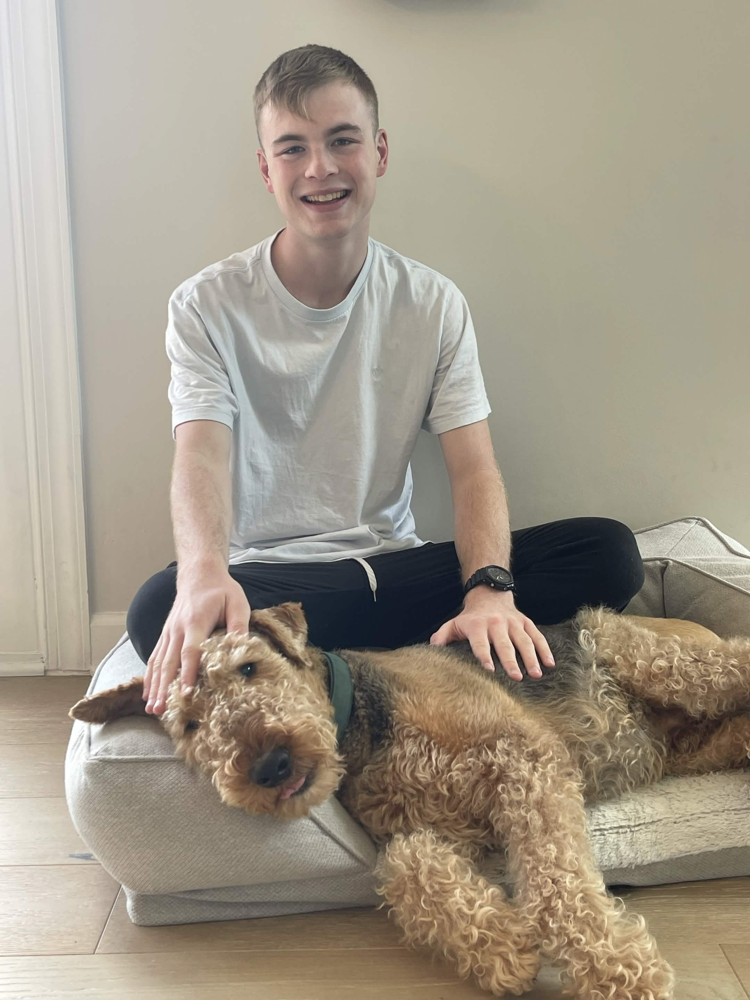

About Me
Growing up, math was always one of my strongest subjects in school, but never something that I enjoyed very much. However, when I initially went to Liberty University to study engineering, I found that I had a passion for mathematics and decided to make it my area of study.

Prior to becoming a tutor, there were many times in my life where I was the one people would go to for math help, whether they were friends, siblings, or just fellow classmates. This inspired me to begin teaching as a math tutor.

I have worked as a math tutor for over a year now and have had many different students who come from both public schools and private schools, and even some who are homeschooled. Teaching has been a very fulfilling job for me, and nothing brings me more joy than seeing students succeed.

At Liberty University, I major in applied mathematics and hope to go on to a career where I can put my math-focused problem-solving skills to good use. I also study music and enjoy hobbies such as chess, long-distance running, pickleball, and reading.